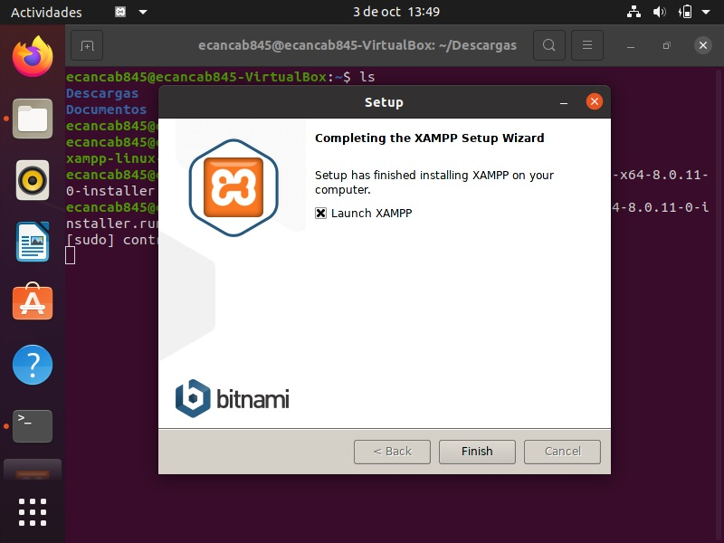

Instalación de XAMPP en Windows
Vamos a la página https://www.apachefriends.org/es/download.html y descargamos la correspondiente versión para Windows:
Ejecutamos el archivo de instalación descargado:
Configuramos la instalación:
Elegimos el idioma de instalación:
El programa comienza su instalación:
La instalación finaliza y da la opción de iniciar el Panel de Control:
Este sería el Panel de Control, desde el cual se puede controlar de forma gráfica diversas funciones del paquete XAMPP, como iniciar/parar módulos, configurar parámetros, etc:
Instalación de XAMPP en Linux
Vamos a la página https://www.apachefriends.org/es/download.html y descargamos la correspondiente versión para Linux:
Antes de proceder a la instalación, debemos cambiar los permisos al archivo de instalación mediante el comando chmod 755 xampp-linux-x64-8.0.11-0-installer.run y posteriormente ejecutar dicho archivo mediante sudo ./xampp-linux-x64-8.0.11-0-installer.run

Configuramos la instalación
El programa comienza su instalación:
La instalación queda realizada en el directorio /opt/lampp y da la opción de iniciar el Panel de Control:
Este sería el Panel de Control, desde el cual se puede controlar de forma gráfica diversas funciones del paquete XAMPP, como iniciar/parar módulos, configurar parámetros, etc:
Ejecución de código PHP embebido
Código PHP embebido en un archivo HTML es aquel que se encuentra entre código HTML. Este tipo de archivos no pueden tener extensión html, sino php. Para ser ejecutados necesitan ser llamados desde la barra del navegador mediante un servidor web, como por ejemplo Apache, ya que si ejecutamos este archivo desde un navegador, no será ejecutado sino que se nos mostrará el código fuente del archivo./p>
Un archivo con php embebido, como por ejemplo inicio.php, podría ser este:
Para ejecutar correctamente un archivo php, primero debemos iniciar el servidor web y colocar dicho archivo en el directorio htdocs, situado en el directorio de instalación de XAMPP.
A continuación, abriremos una ventana de navegador y escribiremos 127.0.0.1/archivo.php ó también podemos escribir localhost/archivo.php
Ejecución de código PHP puro
Código PHP puro es aquel que se encuentra en un archivo que solamente contiene código php y por supuesto el archivo tiene extensión php. Las condiciones para poder ejecutar un archivo de este tipo son las mismas que en el caso de código php embebido.
Un archivo con php puro, como por ejemplo inicio.php, podría ser este: